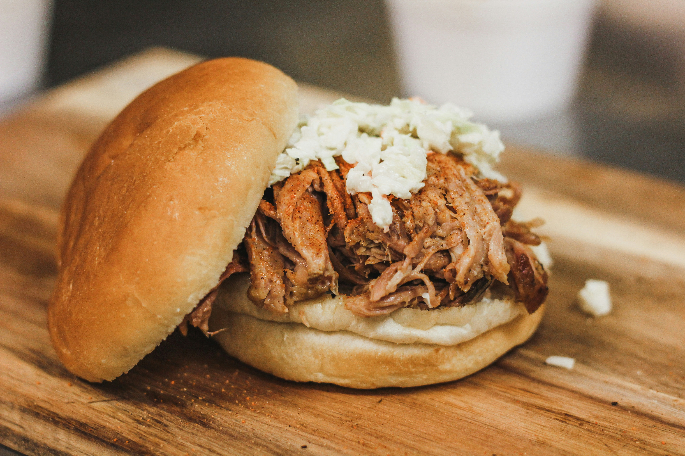

Justin's Pulled Pork

Juicey pulled pork with a homemade BBQ sauce.
Pulled pork is a slow-cooked classic, known for its tender, flavorful meat that falls apart effortlessly. This recipe will help you create juicy, mouthwatering pulled pork perfect for sandwiches, tacos, or simply enjoying on its own.
Ingredients
- 1 boneless pork shoulder (about 3-4 pounds)
- 1 tablespoon brown sugar
- 1 tablespoon paprika
- 1 tablespoon garlic powder
- 1 tablespoon onion powder
- 1 tablespoon salt
- 1 tablespoon pepper
- 1 tablespoon cumin
- 1 tablespoon chili powder
- 1 tablespoon cayenne pepper
- 1 cup chicken broth
- 1 cup BBQ sauce
Steps
- Preheat oven to 300°F.
- Combine all the spices in a small bowl.
- Rub the spice mixture all over the pork shoulder.
- Place the pork shoulder in a roasting pan and add the chicken broth.
- Cover the pan with foil and bake for 4 hours.
- Remove the pork from the oven and shred with two forks.
- Combine the shredded pork with the BBQ sauce.
- Return the pork to the oven and bake for an additional 30 minutes.
- Remove the pork from the oven and serve on buns.